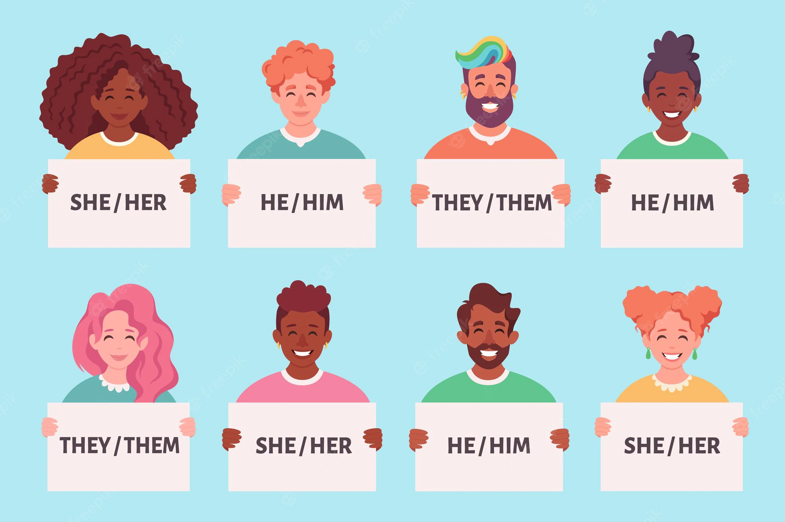

In 2020, the Supreme Court declared that Title VII applied to sexuality and gender identity, meaning a potential employer cannot legally deny employment based on these traits. Despite this, transgender and non-binary individuals are twice as likely to be unemployed than their cisgender peers and, when they are employed, make 32% less. A new study identifies one possible contributing factor to this disparity: gender-diverse pronouns on resumes.
The study sought to understand what effect the inclusion of pronouns on resumes had on the perceived hireability of transgender and non-binary individuals. By setting up a two-pronged study, researchers studied both what gender-diverse individuals worry about as well as how the general population would respond to seeing pronouns on resumes.
In order to understand what effect the process would have, they first needed to understand the worries and lived experiences of transgender and nonbinary individuals. To do this, researchers surveyed over 60 transgender and non-binary individuals, asking the participants to share the worries and experiences they have with including their pronouns on their resumes. Of the respondents, very few had engaged in the practice; researchers found, however, that the neglect of this exercise is rooted in worry.
Not only did 98% of participants report having worries in including their pronouns on their resume, but 76% of these worries had to do with a fear that including one’s pronouns on their resume would lead to potential employers denying them a job or an interview. This distress was especially prominent in participants who used they/them pronouns, who reported it at 1.77 times the rate of other contributors. These participants were also 4.5 times as likely to worry about an employer developing preconceived notions about them if their resume included pronouns.
This unease was, unfortunately, corroborated by the general population. In the second part of the study, researchers randomly assigned over 600 participants to one of eight different resumes. All resumes were identical save 2 factors: all resumes had 1 of 2 names (Michael or Rachel) and 1 of 4 sets of pronouns (he/him, she/her, they/them, or no pronouns). Participants were asked whether or not they would recommend the candidate for a job interview and to rank the imaginary candidates’ qualifications.
The researchers found participants who were assigned to resumes using they/them pronouns were less likely to recommend the “candidate” for an interview. These results were particularly true of Republican participants, who were also found to rank candidates with they/them pronouns lower than those without. The researchers found no such effects when only accounting for Democrats.
These results indicate that the potential for gender identity-based discrimination remains. Trans and non-binary individuals feel unsafe in including their pronouns on their resumes. That perception represents a bigger problem: those who are gender-diverse do not feel secure in a contemporary workplace. When our transgender and non-binary peers are not sure if they will be accepted in the workplace, it potentially decreases their employment opportunities and their work productivity. If gender diverse individuals constantly fear discrimination, their focus turns from obtaining employment and engaging in work to protecting themselves while in the workplace; if these individuals do not feel that they can be themselves in job application settings, how can they possibly be themselves while at work?
Unfortunately, the study also shows that the fears which prevent transgender and non-binary from engaging with their identity in application settings are supported by the opinions of every-day Americans: transgender and (especially) non-binary workers are seen as less qualified and less hireable by nature of their gender identity. However, this consensus could not be more incorrect: gender diverse individuals are more employable because of their lived experiences. Discrimination (even beyond that in the workplace) prepares gender-diverse individuals to interact with difficult situations and find the best possible solution. If employers continue to overlook these candidates, they will miss out on creating a work environment that is better for everyone because it is supplied with employees who have developed these skill sets through difficult experiences.
The inclusion of transgender and non-binary individuals in profession workspaces is more than just a box to be checked: it is an opportunity for employers to create an office with more backgrounds and more ideas. This new study shows that some of those backgrounds are continually neglected and that apparently, the two words “they/them” on a resume are enough to eliminate a candidate for a job where they could contribute meaningful assistance to the betterment of a company. Corporate America must do better to save not only transgender and non-binary people, but also themselves.
Images by Myhrtoolkit and Freepik.Seth is a political science major at BYU with an emphasis in political research and analysis and minors in art history and nonprofit management. Seth has always had a desire to pursue a career in providing social change. After graduation, Seth hopes to help social impact organizations understand their impact through statistical research and analysis and engage in high-level research on transgender and non-binary employment.